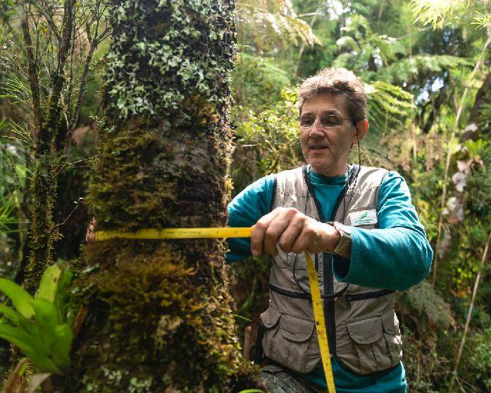
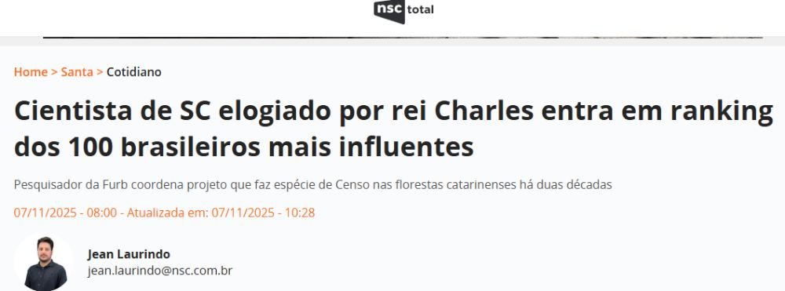
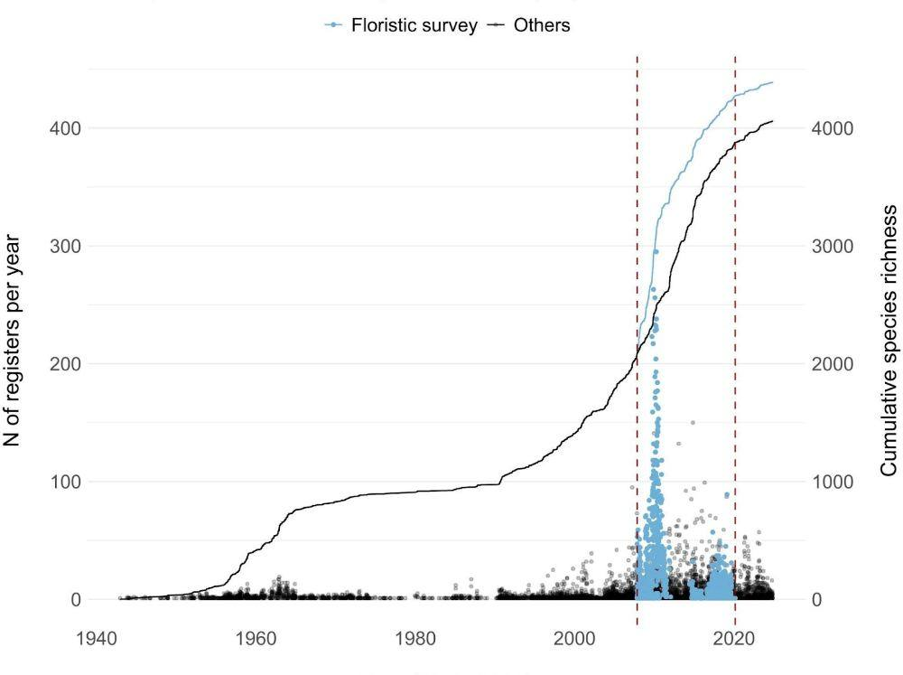
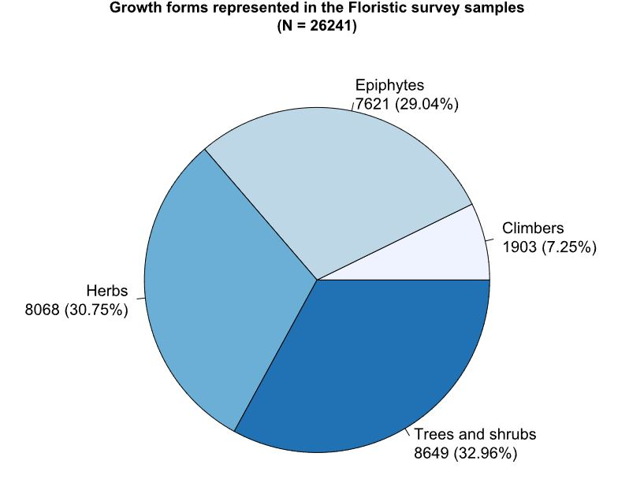
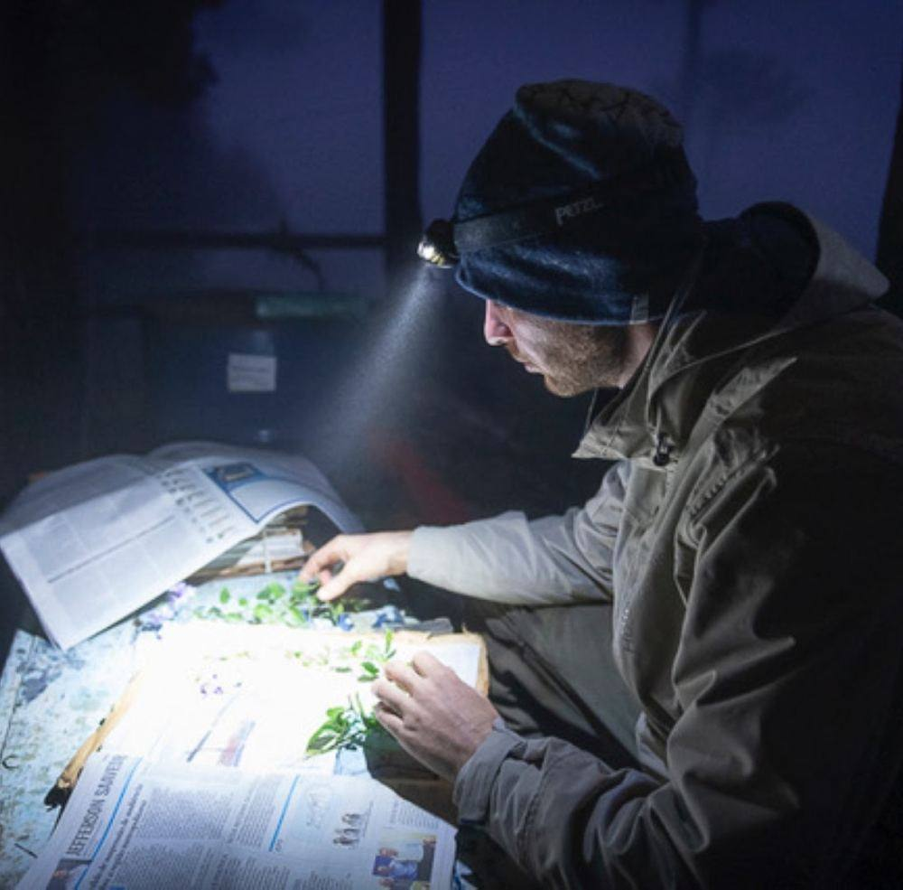
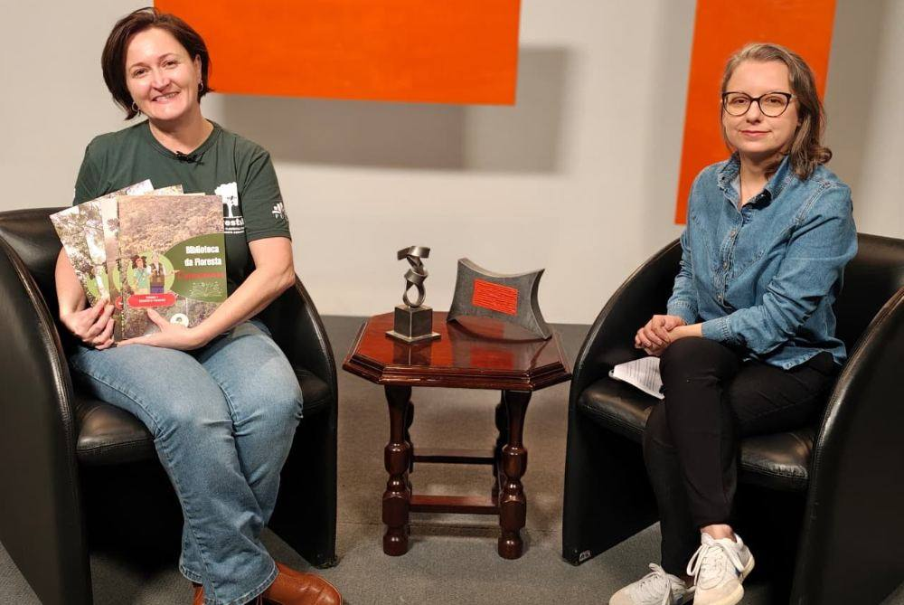

Etapa de campo de 2025 concluída!
18 de Dezembro de 2025
Esta parte da página usa um recurso interativo do Google Sites que não pôde ser copiado. Ver no site atual ↗
As atividades de campos de 2025 foram finalizadas e com isso, mais uma etapa da remedição do 3º ciclo de medição foi cumprida. A conclusão de mais uma etapa foi possível graças ao empenho de uma equipe que trabalhou incansavelmente, encarando as adversidades inerentes ao trabalho de campo.
Integraram a equipe de campo durante a etapa de 2025:
Leander Bini: engenheiro florestal e líder da equipe de campo (participou entre março e novembro de 2025);
Anderson Kassner Filho: biólogo e botânico responsável pela identificações de espécies da flora. (março a novembro de 2025);
Daniel Parma: biólogo e auxiliar de campo (março a outubro de 2025);
Felipe Zimmermann: biólogo e auxiliar de campo (março de 2025)
Angela Fortes: : bióloga e auxiliar de campo (maio de 2025)
A etapa de 2025 iniciou em ????e finalizou em 28/11/2025.
Foram remedidas neste período ??? unidades amostrais, distribuídas da seguinte maneira nas mesorregiões de SC:
Estas unidades somadas àquelas medidas nas outras etapas do 3º ciclo de medição, que iniciou em 2022, totalizam ??? unidades amostrais.
O FlorestaSC tem realizaodo diversas atividades nas unidades maositas medidas:
- Remedição de árvores incluídas no ciclo anterior e medição de árvores ingressas;
- identificação e coletas botânicas das espécies arbóreas;
- avaliação da regeneração natural;
- obtenção de fotografias hemisféricas;
- medição de alturas com hipsômetro para ajustes de modelos hipsométricos.
Para 2026 está prevista mais uma etapa com aproximadamente 60 unidades amostrais planejadas para remdição. Com esta etapa de 2026, será concluída o 3º Ciclo de remedições de unidades amostrais situadas em áreas com floresta.
Não deixe de acompanhar nossas atividade no próximo ano!
Coordenador do FlorestaSC está entre os cientistas mais influentes do Brasil
07 de Novembro de 2025

O coordenador do FlorestaSC, Prof. Alexander Vibrans, é considerado um dos cientistas mais influentes do Brasil, segundo um ranking elaborado pela Agência Bori e plataforma Overton, que mapeiam a interface entre ciência e políticas públicas.
O pesquisador é o único pesquisador de Santa Catarina que figura entre os 100 cientistas brasileiros mais influentes no mundo em decisões e políticas públicas.
A seleção dos cientistas foi feita a partir de uma análise detalhada de citações em relatórios, pareceres e documentos estratégicos utilizados por governos, organizações internacionais e entidades da sociedade civil, entre 2019 e 2025. O levantamento focou no impacto direto e na incidência real das pesquisas conduzidas pelos cientistas nas decisões que afetam a sociedade. Saiba mais sobre o levantamento.
O grande feito foi destaque e com amplo reconhecimento nas mídias:

FlorestaSC amplia o conhecimento sobre a biodiversidade da Floresta Atlântica catarinense
03 de Novembro de 2025
O programa FlorestaSC, que há 18 anos monitora sistematicamente as florestas de Santa Catarina, acaba de publicar novos resultados na revista Forest Ecology and Management, no artigo “FlorestaSC: A double-up approach to improve biodiversity monitoring in hyperdiverse forests”. O estudo destaca como a integração entre inventários florestais e levantamentos florísticos — realizada de forma contínua ao longo do tempo — é fundamental para compreender a verdadeira riqueza de espécies da Floresta Atlântica.
A pesquisa comparou dois ciclos completos de amostragem distribuídos por todo o estado, totalizando mais de 500 parcelas permanentes. Combinando medições estruturais das florestas e coletas de material fértil de plantas, o FlorestaSC registrou 2.871 espécies de plantas vasculares, o que corresponde a 44% de toda a flora conhecida de Santa Catarina.
Enquanto o inventário florestal documentou 918 espécies de árvores e arbustos, os levantamentos florísticos acrescentaram 2.679 espécies, incluindo ervas, epífitas e trepadeiras. Juntas, essas abordagens revelam um panorama muito mais completo da diversidade vegetal e demonstram a importância da integração de diferentes metodologias de coletas de dados florestais. Além disso, revisitar as parcelas ao longo dos anos é indispensável para continuar detectando novas espécies. No segundo ciclo de amostragem, foram incluídas 278 espécies que não haviam sido registradas anteriormente, evidenciando que o conhecimento sobre a biodiversidade cresce de forma acumulativa quando o monitoramento é mantido de maneira contínua, reforçando o valor de programas de longo prazo.

Evolução do Herbário FURB ao longo dos anos, comparando a contribuição exclusiva dos Ciclos 1 e 2 dos levantamentos florísticos da FlorestaSC (pontos e linhas azuis) com outros registros (pretos). Cerca de 7% (328) de todas as espécies no FURB foram coletadas exclusivamente por meio de levantamentos florísticos (diferença entre as linhas azuis e pretas). A primeira linha vermelha tracejada indica o início do Ciclo 1 (2007) e a segunda, o fim do Ciclo 2 (2020).

O espectro de formas de vida de nossas coleções revelou uma predominância de árvores e arbustos (Número de registros = 8649, ou 33,0%), seguidos por ervas (8068, 30,8%), epífitas (7621, 29,0%) e trepadeiras (1903, 7,3%).
O estudo também destacou a importância do trabalho taxonômico: em média, as espécies que não são identificadas no momento da coleta levaram quase dois anos para serem identificadas, refletindo a complexidade do processo e a necessidade de investimento permanente em formação de especialistas botânicos e manutenção de coleções científicas.
Grande parte das amostras coletadas foi incorporada ao Herbário Dr. Roberto Miguel Klein (FURB), que hoje abriga 40% de seus exemplares oriundos de coletas do FlorestaSC. Além de fortalecer a pesquisa botânica regional, a digitalização e disponibilização desses registros em plataformas abertas, como JABOT e speciesLink, tornam os dados acessíveis a pesquisadores e gestores ambientais do Brasil e do exterior.
Ao longo de quase duas décadas de atuação, o FlorestaSC se consolidou como um modelo de monitoramento de longo prazo, contribuindo para o avanço do conhecimento sobre as florestas catarinenses e para apoiar políticas de conservação.

Para saber mais, acesse o artigo na íntegra: https://doi.org/10.1016/j.foreco.2025.123204

ASSISTA AQUI a entrevista na íntegra!
A Biblioteca da Floresta Catarinense é destaque no Programa FURB Pesquisa
31 de Outubro de 2025
A Profa. Daniela Tomio, coordenadora da Biblioteca da Floresta Catarinense foi entrevistada no Programa FURB Pesquisa. Na entrevista a Profa Daniela destacou a potencialidade de uso desta coleção no ensino sobre as florestas catarinenses na Educação Básica e sobre a possibilidade de adicionar um sexto volume à coleção, com foco no conhecimento dos povos originários.
A Prof. Daniela coordenou um coletivo com pesquisadores da FURB/FlorestaSC e 17 professores de escolas públicas de diversas áreas, que produziu a coleção Biblioteca da Floresta Catarinense, lançada em junho deste ano.
O trabalho foi até premiado! Foi vencedor da categoria “Professores” do III Prêmio Lucia Sevegnani de Democratização do Conhecimento, entregue no encerramento da 19ª Mostra Integrada de Ensino, Pesquisa, Extensão e Cultura (MIPE), em setembro.
Divulgando ciência para os adolescentes do PROA
24 de Outubro de 2025
O mês de outubro foi marcado com algumas atividades realizadas pelo FlorestaSC com turmas do Programa Protetor Ambiental - PROA Adolescentes. O PROA é uma iniciativa da Polícia Militar Ambiental com foco na educação informal de adolescentes de 12 a 14 anos, visando a conscientização ambiental e a capacitação para o exercício de práticas ecológicas.
As ações foram conduzidas pelos pesquisadores Adilson Nicoletti, Débora Lingner, Giesta Oliveira e Murilo Schramm, e pelo cabo Severo (responsável pelas turmas).
No dia 14 de outubro foi realizada uma palestra no Colégio Policial Militar Feliciano Nunes Pires, sobre como é feito o estudo das florestas catarinenses, riquezas de espécies, os tipos de plantas e outros conceitos ecológicos.
No dia 16 de outubro recebemos no laboratório do FlorestaSC a Turma PROA Pomerode (27 alunos), da EBM Almirante Barroso, e no dia 21 de outubro, a Turma PROA Blumenau (30 alunos), do Colégio PM Feliciano Nunes Pires. foram realizadas práticas de medição de árvores, instalação de unidade amostral e montagem de exsicatas, além de palestras e demonstrações do uso de drone e outros equipamento de campo.
Participação no VII MENSUFLOR Encontro Brasileiro de Mensuração Florestal
29 de Setembro de 2025
O pesquisador Laio Oliveira participou e apresentou um estudo científico no VII MENSUFLOR Encontro Brasileiro de Mensuração Florestal. O evento ocorreu em Lavras - MG | Universidade Federal de Lavras, entre 24 e 27 de setembro de 2025.
O Mensuflor é um evento bienal que reúne pesquisadores e profissionais das áreas de dendrometria, inventário e manejo florestal, entre outras especialidades relacionadas à obtenção e análise de dados florestais.
A Biblioteca da Floresta Catarinense é premiada no MIPE
22 de Setembro de 2025
Premiação da MIPE.
Apresentação de trabalho durante a 19º MIPE.
O trabalho “Biblioteca da Floresta Catarinense: divulgando ciência na escola para educação florestal” foi premiado durante a solenidade de encerramento da 19ª edição da Mostra Integrada de Ensino, Pesquisa, Extensão e Cultura (Mipe) da Universidade Regional de Blumenau (FURB).
A solenidade ocorreu no dia 18 de setembro de 2025 e reuniu integrantes da gestão superior, professores e estudantes no auditório do Bloco J para a entrega do III Prêmio Lucia Sevegnani de Democratização do Conhecimento. A premiação objetiva incentivar a divulgação do conhecimento produzido na universidade em linguagem à comunidade e contempla três categorias: Estudantes de Graduação, Estudantes de Pós-Graduação e Professores FURB.
Na categoria Professores FURB, o trabalho sobre a Biblioteca da Floresta Catarinense ficou em primeiro lugar. O prêmio foi recebido pela professora Daniela Tomio, coordenadora da Biblioteca da Floresta Catarinense e professora do Departamento de Educação, além de pesquisadora vinculada aos Programas de Pós-Graduação em Educação (PPGE/FURB) e em Ensino de Ciências Naturais e Matemática (PPGECIM/FURB).
ASSISTA AQUI a reportagem sobre a premiação da 19º MIPE.
A 19ª MIPE ocorreu entre 16 a 18 de setembro de 2025, com o objetivo de apresentar e compartilhar as pesquisas, projetos e experiências de estudantes e professores com a comunidade acadêmica e a sociedade em geral. O trabalho sobre a Biblioteca da Floresta Catarinense foi apresentado no dia 17 de setembro de 2025 pela professora Daniela Tomio e pela graduanda de Pedagogia/FURB, Cristiane Regina Sulenta.
Além do trabalho sobre a Biblioteca da Floresta Catarinense, também foi apresentado no 19ª MIPE o trabalho "Desenvolvimento de material em realidade aumentada para a divulgação científica das florestas", também no dia 17 de setembro de 2025. O trabalho foi coordenado pelos professores Mauricio Capobianco Lopes, Dalton Solano dos Reis e Daniela Tomio, com colaboração do pesquisador Nando Matheus Rocha e dos estudantes Matheus Gamba de Oliveira, Caroline Lucini, Bernardo Chiamolera, Bruno Fischer Ferreira Santos, Lucas Hang Lae Son e João Gabriel Soares Lavina.
Minicurso sobre uso do drone é realizado na 49ª Semana Acadêmica de Biologia
11 de Setembro de 2025
No dia 09 de setembro de 2025, foi realizado o minicurso “Coleta de dados de atributos florestais com sensores montados em drone: aplicações e perspectivas.”, ministrado pelo pesquisador Murilo Schramm do FlorestaSC. O minicurso fez parte da programação da 49ª Semana Acadêmica de Biologia (SAB), promovida pelo curso de graduação de Ciências Biológicas da FURB e pelo Centro Acadêmico da Biologia.
Além de compartilhar suas experiências com o uso do drone nas pesquisas do FlorestaSC, o pesquisador Murilo abordou conceitos de Sensoriamento Remoto, tipos de drone e sensores e aplicações do drone no estudo da vegetação.
Realizou-se também uma prática sobre planejamento do voo e aspectos operacionais do drone.
Palestra no Curso de Especialização em Policiamento Ambiental, em Lages
10 de Setembro de 2025
Mais uma atividade em parceria com a Polícia Militar Ambiental de Santa Catarina realizada com sucesso! No dia 03 de setembro de 2025 estivemos em Lages para uma palestra sobre as ações, resultados e bases de dados do projeto. Também se abordou as aplicações desenvolvidas pelo FlorestaSC para a PMA-SC. A palestra ministrada pelos pesquisadores Adilson Nicoletti e Débora Lingner integrou a programação do Curso de Especialização em Policiamento Ambiental (CEPA) na PMA
Estudo avalia o risco de extinção de espécies de árvores em Santa Catarina
03 de Setembro de 2025
Guilherme Gritzz, doutorando da Universidade de São Paulo, e seus coautores publicaram um estudo na revista Oryx avaliando o risco de extinção de mais de 500 espécies de árvores em Santa Catarina, Brasil. O artigo foi intitulado como Assessing the extinction risk of tree species in the subtropical Atlantic Forest using multiple IUCN criteria.
Utilizando os critérios da Lista Vermelha da IUCN, eles constataram que 98% das espécies avaliadas estão ameaçadas, muitas delas com declínio populacional superior a 50% nas últimas gerações. Essa avaliação regional destaca a necessidade urgente de políticas de conservação atualizadas e esforços de conservação localizados.
A Mata Atlântica é um hotspot de biodiversidade, mas resta apenas um quarto de sua cobertura original. O trabalho de Guilherme oferece um roteiro crucial para a proteção das árvores remanescentes.
Para saber mais, acesse o artigo na íntegra: https://doi.org/10.1017/S0030605324001534
75º Congresso Nacional de Botânica
26 de Agosto de 2025
Ótimas experiências e até prêmios, o 75º Congresso Nacional de Botânica (CNBot) rendeu! O evento ocorreu em Parnaíba (PI), entre 09 e 16 de agosto de 2025. Participaram do evento os professores e pesquisadores do FlorestaSC/Herbário FURB: prof. Alexander Vibrans, prof. André de Gasper, Anderson Kassner, Gabriel Yan e Giesta Oliveira.
Durante o evento, além da participação em palestras, simpósios e sessões temáticas, foram apresentados estudos (posters) e realizada a divulgação das iniciativas mais recentes do projeto (App FlorestaSC RA e Biblioteca da Floresta Catarinense).
Os seguintes trabalhos (posters) foram apresentados:
• A contribuição de identificações posteriores para o conhecimento da flora: análise do programa FlorestaSC. (André de Gasper);
• Banco de DNA do Herbário FURB: Um Recurso Valioso para Estudos Moleculares da Flora Catarinense (Gabriel Yan);
• Estratégias Ecológicas da Comunidade Arbórea da Floresta Ombrófila Mista de Santa Catarina (Gabriel Yan);
No evento ocorreu também a premiação dos trabalhos que mais se destacaram. O pesquisador Gabriel Yan foi premiado na categoria Mestrado e o botânico Anderson Kassner Filho ganhou o 1º lugar no Concurso de Fotografia.
Além das atividades acadêmicas programadas, também foram estabelecidos contatos com outros pesquisadores da área, o que possibilitou a troca de experiências, a discussão de potenciais colaborações e o fortalecimento da rede de pesquisa em Botânica, especialmente em temas relacionados à flora da Floresta Atlântica e à conservação.
Parabenizamos os pesquisadores do FlorestaSC e Herbário FURB pelo empenho em seus estudos e pelos prêmios conquistados no CNBot!
FlorestaSC no Junho Verde 2025
01 de Julho de 2025
O FlorestaSC promoveu algumas ações que integraram o calendário do Junho Verde de Blumenau, coordenado pela Diretoria de Educação Ambiental e Bem-estar Animal da Semmas. O Junho Verde é um mês dedicado à conscientização ambiental, com ações realizadas por instituições públicas, privadas e do terceiro setor, que visam sensibilizar a sociedade sobre a importância da preservação do meio ambiente.
Confira a seguir as açõs do FlorestaSC no Junho Verde.
Autores da coleção Biblioteca da Floresta Catarinense
🎥 Saiba mais nessa reportagem da FURB sobre o lançamento
No dia 13/06 (sexta-feira) ocorreu o Lançamento da Biblioteca da Floresta Catarinense, no Auditório da Biblioteca FURB (Campus 1).
A Biblioteca da Floresta Catarinense é uma coleção de livros informativos voltada à Divulgação Científica para Educação Florestal. O evento foi aberto à comunidade em geral, com a presença dos autores e palestras da profa. Daniela Tomio e prof. Alexander Vibrans. Essa foi uma oportunidade para se conectar com o conhecimento sobre as florestas de Santa Catarina, refletir sobre sua conservação e valorizar o diálogo entre ciência, educação e natureza.
No dia 14/06 (sábado) foi realizada a palestra "Engenharia Florestal e Educação: Conexões pela Sustentabilidade", promovida pelo FlorestaSC junto com a AEFVale (Associação dos Engenheiros Florestais do Vale do Itajaí). A palestra ocorreu no Auditório do Campus 2 da FURB e foi realizada pelos pesquisadores do FlorestaSC Débora Lingner e Nando Rocha e pelo presidente da AEFVale, Ney Rocha.
O evento tinha como público-alvo, profissionais das áreas da Geociências, Engenheiros Florestais e publico interessado. Foram apresentados os livretos da Biblioteca da Floresta Catarinense e do aplicativo de realidade aumentada desenvolvidos no Programa FlorestaSC. A iniciativa destacou como o conhecimento técnico da engenharia florestal, aliado à divulgação científica e ao uso de tecnologias inovadoras, contribui para aproximar a sociedade das florestas e fortalecer práticas educativas voltadas à conservação e ao uso sustentável dos recursos naturais.
No dia 25/06 (quarta-feira) aconteceu a oficina "Conhecendo a Floresta com Realidade Aumentada", na EBM Visconde de Taunay.
A oficina foi conduzida pelo pesquisador Nando Rocha, que realizou com os estudantes uma atividades prática de uso do FlorestaSC RA, um aplicativo de realidade aumentada para conhecer curiosidades, funções ecológicas e relações das espécies de árvores com o meio ambiente. A proposta da ação foi promover a educação florestal de forma lúdica e inovadora, através de uma experiência interativa com o uso de tecnologias digitais para explorar espécies nativas da floresta catarinense em realidade aumentada.
Lançamento da coleção Biblioteca da Floresta Catarinense
24 de Junho de 2025
Faça seu download AQUI
Um grande feito foi realizado pelo FlorestaSC no que tange à divulgação científica sobre as florestas catarinenses. Na noite do dia 13 de junho (sexta-feira), o FlorestaSC lançou a nova coleção Biblioteca da Floresta Catarinense, com fomento do CNPq e organizada pela professora Daniela Tomio, do Centro de Ciências da Educação, Artes e Letras (CCEAL) da FURB.
A coleção consiste em um material didático destinando a fortalecer a divulgação das descobertas científicas do FlorestaSC a docentes e alunos das escolas de Ensino Fundamental e Médio de Santa Catarina.
A Biblioteca da Floresta Catarinense é constituída por cinco (5) livretos, com uma tiragem de dois mil exemplares, que serão distribuídos nas escolas do estado. A coleção também foi disponibilizada em formato digital no site do projeto para DOWNLOAD.
Reportagem da FURB sobre o lançamento da coleção.
O evento do lançamento foi um sucesso e com a "casa cheia"! Ocorreu no auditório da biblioteca do campus 1 da FURB e contou com a presença de alunos e professores de diferentes cursos da FURB, como Eng. Florestal, Biologia, Pedagogia e Ciências da Computação. Também estiveram presentes Débora Bertholdo (representando a Secretaria de Educação de Blumenau), Roberta Ramos (extensionista social da Epagri), Fábio Perez (diretor do CCT/FURB) e André de Gasper (chefe do DAP/FURB).
Lançamento no auditório da biblioteca da FURB
O projeto para confecção da nova coleção, iniciada em 2022, contou com a participação de docentes da FURB, pesquisadores do FlorestaSC e docentes da rede estadual de ensino de Santa Catarina. A participação de docentes do ensino básico, muitos deles egressos da graduação e pós graduação da FURB, foi fundamental para agregar à coleção uma linguagem próxima dos profissionais da educação.
No evento, a Profa. Dra. Daniela Tomio, coordenadora da Biblioteca da Floresta Catarinense destacou que a obra "é uma coleção de livros informativos voltados para o público escolar , infanto juvenil, em que nós fizemos uma divulgação científica para a educação florestal. E essa divulgaão científica são de conhecimentos elaborados no programa FlorestaSC.”.
O Prof. Dr. Alexander Vibrans, coordenador do FlorestaSC afirmou que "a ideia foi criar um grupo que elaborasse um material didático, não em base em exemplos da América do Norte, da Austrália ou da Europa, mas com exemplos, dados e informações das florestas de Santa Catarina que estão aqui na nossa frente”.
Durante o evento também foi divulgado o novo aplicativo de realidade aumentada: o FlorestaSC RA, disponível na Play Store. Esta iniciativa é financiada pela FAPESC e liderada pelo Prof. Dr. Maurício Capobianco Lopes, do Departamento de Sistemas e Computação da FURB. O aplicativo mostra figuras tridimensionais de cinco (5) espécies de árvore e possui dados científicos sobre as espécies, desafios para testar conhecimentos ecológicos e experiências interativas com as árvores (ex.: interações árvore x fauna).
Prof. Dr. Maurício Lopes apresentando o aplicativo
Mostrando o app para crianças
Novos reforços na equipe de 2025
06 de Maio de 2025
A equipe de sensoriamento remoto e geoprocessamento do FlorestaSC recebeu reforços! O coordenador do FlorestaSC, professor Alexander Vibrans, deu as boas-vindas ao Eng. Florestal Luiz Carlos da Silveira e aos acadêmicos de Engenharia Florestal, Gabriel Lessa e de Computação, Laura Isabela Seibt. Os três novos integrantes trabalharão na detecção e mapeamento de áreas de regeneração das florestas nativas catarinenses e no processamento de imagens aéreas históricas do século 20. Eles usarão ferramentas de sensoriamento remoto, geoprocessamento e imagens pancromáticas, multiespectrais LiDAR. Estas imagens são captadas por sensores em órbita e montados em aeronaves e drones.
Os "novos" se juntam à equipe liderada por Adilson Nicoletti e Débora V. Lingner, composta pelos professores Jonathan G. Müller e Artur Bizon, bem como por Murilo Schramm da Silva, Marlon Yuri Andrade e Thuane Laís Farias. O mapeamento das áreas em regeneração completará o monitoramento das mudanças da cobertura florestal de Santa Catarina, que conta também com a etapa da detecção das áreas desmatadas no período entre 2017 e 2022, a ser concluída no próximo semestre.
O FlorestaSC é um programa permanente de pesquisa das florestas catarinenses, custeado com recursos do governo estadual (SEMAE e Fapesc).
Visita da turma do Técnico em Meio Ambiente do IFFSC
25 de Abril de 2025
No dia 24 de abril de 2025, recebemos a visita da turma do Técnico em Meio Ambiente do IFSC/Florianópolis, coordenada pelo professor Rafael Schmitz.
Na parte da manhã, os alunos visitaram o laboratório do FlorestaSC, localizado no campus 2 da FURB. Os alunos puderam realizar uma prática de medição de parcela e entender o uso do drone no monitoramento florestal, além de conhecer as principais ações, produtos e dados produzidos pelo FlorestaSC.
Já no período da tarde, os alunos conheceram o Herbário FURB, situado no campus 1, onde puderam compreender melhor como as plantas são coletadas e armazenadas em um herbário, além de realizar uma prática de montagem de exsicata.
Etapa de campo de 2025 iniciada!
19 de Março de 2025
A etapa de campo de 2025 já começou! Está prevista a remedição de 60 unidades amostrais neste ano, para dar continuidade ao 3º Ciclo de Medições e avaliar a dinâmica da floresta. Fazem parte da equipe deste ano: o eng. florestal Leander Bini (chefe de equipe), os biólogos Anderson Kassner Filho (botânico) e Daniel Parma e o graduando de Ciências Biológicas, Felipe Zimmermann.
As fotos abaixo são da 1º campanha que ocorreu entre 03/03 e 14/03, no Oeste catarinense. Não deixe de acompanhar nossos stories do Instagram para ver outras fotos da atividade de campo.
Visita à Floresta René Frey: primeiros passos para a criação de um novo app
10 de Fevereiro de 2025
Entre os dias 05/02/2025 e 07/02/2025, ocorreu uma visita exploratória ao Parque Ecológico Floresta René Frey (Fraiburgo/SC) para investigar as potencialidades do parque como instrumento de educação florestal. Participaram da ação, os pesquisadores prof. Alexandre Vibrans, prof. Maurício Capobianco, Nando Rocha e Débora Lingnera, além do bolsista
Durante a visita foram reunidas informações para alimentar o aplicativo (app) de realidade imersiva que está sendo desenvolvida mediante a colaboração entre o FlorestaSC e o Laboratório de Desenvolvimento e Transferência de Tecnologia (LDDT/FURB). O app combinado com os óculos VR permitirá aos usuários uma experiência imersiva na Floresta René Frey e ao mesmo tempo, servirá como ferramenta para o ensino interativo sobre as florestas catarinenses em ambiente escolar. No app serão abordados temas acerca do parque, das características e aspectos ecológicos da Floresta de Araucárias e de espécies representativas.
No parque, foram definidos 8 pontos estratégicos (bolhas), onde foram obtidos vídeos e fotos em 360°, tanto em solo como utilizando o drone. Destaca-se a obtenção de vídeos em 360° com drone ao longo do tronco e no entorno de árvores centenárias gigantes de araucária e imbuia.
Também foram realizadas duas entrevistas: uma com o gestor do parque e outra com o prof. Marcelo Scipioni (UFSC), especialista em árvores gigantes do sul do Brasil.
Imbuia com mais de 200 anos.
Filmagem de uma araucária centenária com drone.
Entrevista com o prof. Marcelo Scipioni (UFSC)
Filmagem no interior do tronco oco de uma araucária gigante.
A previsão é que o desenvolvimento do app seja concluído no segundo semestre deste ano. Para saber mais sobre este e outros apps, acesse AQUI.
Acompanhe nosso site e redes sociais para ficar por dentro das ações do projeto.
FlorestaSC
florestasc@furb.br 47 3221-6100
Página migrada de floresta.sc.gov.br.